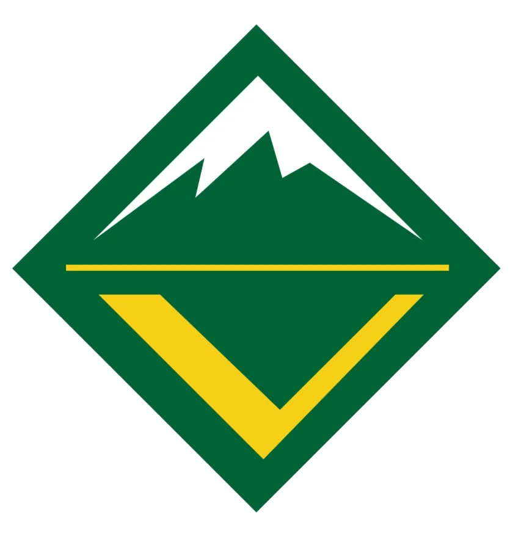

Crew 537

Venture Crew 537 is now active, growing, and a key part of the growth and development of older existing Scouts and youth new to Scouting who are just interested in the high adventure trips.
Venturing is a co-ed youth-led program all about building adventures with your friends. Choose to do activities that matter to you and develop essential skills like leadership, event-planning, organization, communication, and responsibility while having a blast!
Venture Crew meets on Wed evenings at 7PM at this location:
Charter Organization: Our Savior's Church
1975 S. Garrison St.,
Lakewood, CO 80227